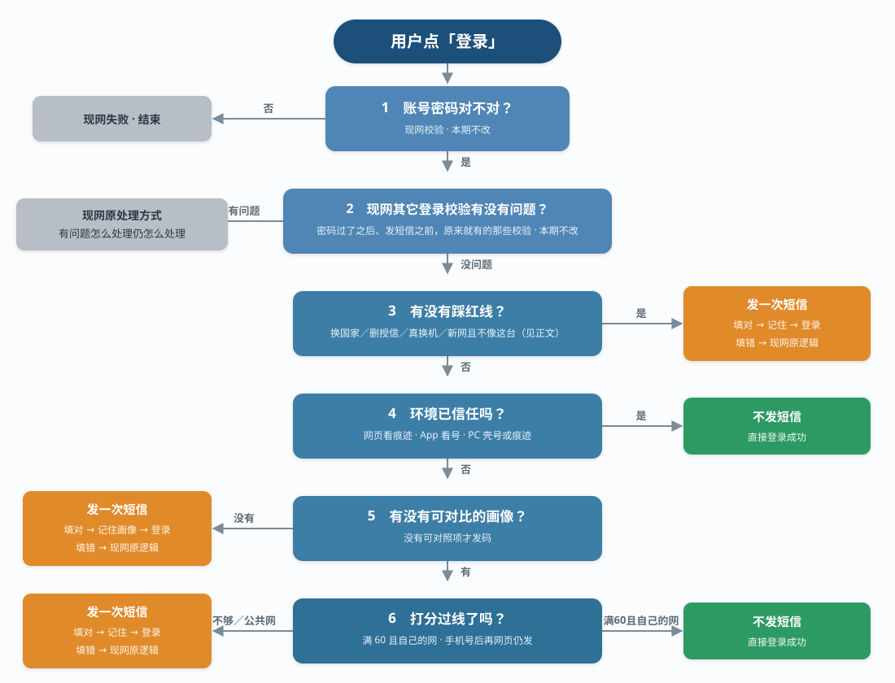

【BE】用户登录异常二次验证逻辑优化
需求范围
账密登录通过后，是否触发「异常设备二次验证」。判定口径由「设备号是否新设备」调整为「当前环境是否像本人」。二次验证能力保留，不以发送次数上限拦截。三站同一套规则。用户端无新增页面。手机号登录维持现网 OTP。
已推进。命中本人：不进入二次验证页，直接登录。打开登录页到登录完成，耗时不超过改造前。少发码依赖点登录即可采集的环境因子组合命中，不在进页时预采集全量字段。验收用短信账单和客诉：本人少收码、仍可登录。
现状几乎只认设备号。网页设备号常变、出口 IP 易跳（越南更明显），本人会反复收到二次验证码。目标是降低同人反复验证，盗号场景仍须发码。验证码填对即可登录：不是拒绝登录，也不是每次都验。
判定流程
不通过：现网失败，结束。
不通过：按现网处理，不进二次验证判定。
命中任一条：发一次。分数不能抵。
H5 认痕迹；App／PC 壳认设备号在库。命中：不发。
无成功登录记录：发一次。
≥60 且自己的网才免验。61、公共网均不够。

三个「发一次」结果相同：不是拒绝登录。多条红线同时命中也只发一次。填对 → 记住 → 登录，下次少发。填错按现网，不记住。发出没登成：不记、红线不消耗。密码对了不能单独免短信。
三种结果
不发
| 情况 | 结果 |
|---|---|
| 同一浏览器验过，痕迹还在，系统大类没变 | 不发。网页号再变也不发 |
| 自己的 App／电脑客户端，号还在库 | 不发 |
| 网页痕迹没了，但是自己的网，系统＋屏幕还对 | 不发。只走过手机号登录的第一次网页账密除外 |
| 出口跳了，但痕迹还在，或客户端号还在库 | 不发 |
| 同机网页换 App／PC 壳：号在库，或自己的网再加还是这台机 | 不发。手机网页去电脑客户端对不上 → 要验 |
| 手机打开电脑网址会进手机页 | 不算换电脑登录 |
网页号不单独免验。退出登录清掉本账号痕迹。网吧没退出＝痕迹还在。
发一次（填对记住）
| 情况 | 下次 |
|---|---|
| 换国家、真换机、新设备＋新网络 | 该国／这台机已记下，不再因同一件事反复验 |
| 后台删授信、被挤掉后又来、改密／解绑后第一次 | 填对后：App／PC 壳认号；网页靠这次痕迹 |
| 完全没登成功过 | 有画像／痕迹后再按「不发」走 |
| 只走过手机号登录，第一次网页账密 | 这张网也不免验。填对后这个浏览器有痕迹 |
| 清站点或换主域名，痕迹没了、号变了、网也跳了 | 填对后这个浏览器有痕迹 |
| 网吧／机场／酒店／商场 WiFi、机房／代理，又没有痕迹 | 公共出口不当家里网。自己的 App 号在库仍不发 |
红线：先于已信任
命中任一条，即使「像」，仍发一次。痕迹挡不住换国家、真换机、删授信、被挤的号再来。
| 编号 | 说明 |
|---|---|
| X-1 | 新设备＋新网络（无痕迹、IP 不在常用、该端系统或屏幕对不上） |
| X-2 | 换国家（过期记录也比国家） |
| X-3 | 后台删了那条授信后再来 |
| X-4 | 满 10 台被挤掉的号再来 |
| X-5 | 真换机：该端操作系统大类变了 |
| X-6 | 绑手机后第一次账密 |
| X-7 | 改密／解绑后第一次账密 |
完整定义点开下面「红线定义」。
两张网
| 哪种网 | 怎么认 | 没痕迹、还是这台机时 |
|---|---|---|
| 公共网 | 网吧、机场、酒店、商场 WiFi、机房／代理 | 发。换主域名也发。这个地址上次来过也不当家里 |
| 自己的网 | 这账号上次成功或近 30 天常用出现过，且不是公共网 | 不发（只走过手机号登录的第一次网页账密除外） |
| 私人网，但这账号没用过 | 不像公共网，但 IP 对不上上次／常用 | 发一次。换主域名也发 |
服务端看这次出口就能分，登录页不再采。不是「看起来像家里」就过。
换主域名
例：m.b123.com → m.b234.com。旧站痕迹带不过去。不算真换机，也不另开免验。已经账密认过、还是自己的网 → 不发。网跳了、没有痕迹 → 发一次，填对记住。只走过手机号登录的第一次网页账密：这张网也不免验。APP／PC 壳不套本条。同档 61 不够过线。
改造前 → 改造后
| 原来 | 现在 |
|---|---|
| 设备号对不上 → 当新设备，发码 | 网页认痕迹，App／PC 壳认库。没认过须自己的网＋还是这台机。同款机不够。公共网不算自己的网 |
| 出口 IP 一跳 → 又当新网 | 痕迹还在或号还在库 → 不发。清站点又跳网 → 发一次，填对记住 |
| 网页设备号常变 → 同人反复当新设备 | 痕迹还在就不发。网页号不单独免验 |
| 为少发码在登录页采一长串 | 不采用。显卡等太久可以缺，系统／屏幕／像素比不能缺 |
下面是同一套规则的展开：红线怎么认、分怎么加、边界怎么走。点开再看，不另立第二套。
采集时机点登录交哪些字段、哪些可以缺。研发对接采集用。
点登录必须交：设备号、痕迹（有则带）、系统、屏幕、像素比；App 再交型号。IP／国家服务端取。不交：城市、页类型、时区、语言、品牌、核数、内存。
显卡等太久可以缺。有像素比就不采显卡；像素比交不上、显卡能马上交到，才用显卡顶 16 分。系统／屏幕／像素比／设备号／痕迹必须点登录就交。
时机（结果）
| 时候 | 做什么 | 不要 |
|---|---|---|
| 打开登录页 | 跟改造前一样进页。不为二次验证先读一长串 | 进页先采齐 20 条再让人点登录 |
| 点登录 | 必须带上当时能马上交的认人项（上表）。IP／国家／城市服务端取。6 问在账密对了之后 | 为显卡等齐了再提交；也 不要 为了快把系统／屏幕／像素比丢掉 |
| 已信任（痕迹还在，或 App 号在库，或 PC 壳号／本壳痕迹） | 未踩红线就放，不打分 | 等打分项齐了才放 |
| 显卡等太久 | 当缺项，不报错，该进的进、该出验证页的出 | 转圈卡死、接口报错、加等待文案 |
| 手机号登录 | 仍必发、不进 6 问。马上能交的字段照交，更不能为二次验证拖这一次 | 打开页／点取码为二次验证采一长串 |
越南低端机、弱网、老版本 App／PC 同样过。不能只在办公室快机上过。老版本交不上＝缺项，不另做兼容开关；老版本至少把能交的系统／屏幕／像素比交上。
红线定义X-1～X-7 完整条件，以及什么叫真换机。命中先于已信任，分数不能抵。
命中任一条，即使下面某些「像」，也 仍发码。分数不能抵。登录步骤与改造前真新设备相同，不是拒绝登录。
环境记录是什么 这账号每一次 登录成功 留下的 一条环境记录：端（H5／PC／App）、时间、IP、国家、城市，以及这次读到的系统／屏幕／显卡／型号等。只 追加，不拿新的去盖掉旧的。没成功登录不写。从成功时刻起留 720 小时。 算写入：账密填对或免验进去；手机号登录成功且该手机号绑得上这个账号（一个账号只能绑一个手机号；画像／设备号挂这个号绑上的那个账号，之后账密对照。）。 不写：手机号登录没登录成功（没绑账号进不去，或发出码没填）；代理手机登录。没绑账号也就没有后续账密， 要解决的：下次登录得有「上次这账号／这端长什么样」才能比（红线、打分、常用）。只留一行会把手机史盖成电脑，所以一条条往后记。文中「上次」「该端已有记录」「常用」都从这些环境记录取。
「该端已有记录」／文中「上次」 文中所有「上次」只从 登录成功 的环境记录取。没成功登录，不会写入次，也就没有可对比的上次。 有记录＝这账号在这端登录成功过；这条环境记录 一定带着端（H5／PC／App），不会出现「有上次但没端」。
- 算：二次验证填对后登录成功；打分／已信任免验成功登录；手机号登录成功且绑得上该账号。近 720 小时内这条还在，才叫该端已有记录。
- 不算：发出码但没填、关页、填错；只点了登录没进去；代理手机登录。没绑账号＝手机号登录进不去，不算这个账号的记录。
- 该端从没成功过 → 没有上次，X-1／真换机 都不踩，去问 5／问 6。
- 环境记录已过 721 小时 → 这条不算该端已有记录；独特改对照账号（只加分，不踩红线）。
| 编号 | 红线 | 说明 |
|---|---|---|
| X-1 | 设备号未授信，且 没有同一浏览器痕迹，且 本次 IP 不在该账号常用／最近成功里，且 该端已有记录的操作系统或屏幕档 明确读到且对不上 | 典型：新设备 + 新网络。出口跳了不踩。该端没有记录、或只是对照账号对不上，不踩，去打分 |
| X-2 | 登录国家 与该账号记过的 常用国家、上次成功国家 都不相同（本次读到的才比） | 换国家一定发一次。痕迹挡不住。过期的环境记录 仍用来比国家（只比国家，不拿去打分／当常用）。对上其中任一就不踩。避免出差刚验过、常用还没翻过来又天天验。本次国家读不到才不当不一致 |
| X-3 | 后台 删除了某条设备授信 之后，这条对应环境的下一次 | 按被删的那条设备号认，不是整号所有端都验。号还对得上 → 发一次（痕迹挡不住）。H5 号已变对不上这条 → 不踩；未换国家则痕迹还在走已信任。痕迹不用后台清。发出没登录成功＝没消耗，再来仍踩。填对登录成功后这条号重新进库。App／PC 壳下次同一号、未踩其它红线 → 已信任；H5 靠这次留下的痕迹（网页号不单独免验） |
| X-4 | 该账号授信满 10 台、按下面挤法被挤掉的那条设备号再来 | 被挤掉的号再出现仍要验（痕迹挡不住）。挤哪台：先看 最近一次登录隔得最久；两台这个时间相同 → 挤 最先记进库 的那条。不是「不管谁最近还在用、一律挤最早登记的」。同一号多次登录只更新最近登录时间，不新占一位。号已变对不上被挤那条 → 不踩 X-4。发出没登录成功＝没消耗，再来仍踩。填对登录成功后这条号按新号重新进库；库仍满 10 → 再挤当前间隔最远的 另一台（刚回来的自己刚更新了登录时间，不会挤自己）。App／PC 壳下次同一号、未踩其它红线 → 已信任；H5 靠这次留下的痕迹（网页号不单独免验） |
| X-5 | 真换机（定义见下） | 只认 该端已有记录 且操作系统大类变了（两边都读到）→ 发一次（号还在库、痕迹都挡不住）。认不出「重装」。清缓存／重装／换显示器／屏幕变了 都不 叫真换机：App／PC 壳号还在库 → 已信任；网页号不单独免验，走打分或 X-1。H5 设备号自己变了不算。换端不拿另一端系统比。App 本来无痕迹，不能把「无痕迹＋屏幕变了」叫真换机。与 X-1 可同时成立，只发一次 |
| X-6 | 绑手机后 第一次 用账号密码登录（现网就会拦的那次） | 该账号的下一次账号密码登录成功 才消耗，不论哪端。中间先走手机号登录／代理手机登录不消耗。发出码没登录成功＝没消耗，下一次账号密码仍要验。与改造前一致 |
| X-7 | 该账号改过登录密码、解绑过手机之后的 下一次 账号密码登录 | 该账号的下一次账号密码登录成功 才消耗，不论哪端。中间先走手机号登录／代理手机登录不消耗。发出码没登录成功＝没消耗，下一次仍要验。只收紧这一次成功，不是每个端各一次。过后按已信任／打分 |
真换机定义
只认用户能不能看出「换了一台设备」。跟的是 该端上次（该端最近一条环境记录），不是对照账号。H5 没有稳定的系统设备号，不能把 H5 设备号变了当成换机。
| # | 算真换机（踩红线，发一次短信） | 说明 |
|---|---|---|
| 1 | 该端已有记录，且操作系统大类变了（两边都读到） | 大类＝iOS／Android／Windows／macOS。iPadOS 算 iOS，鸿蒙算 Android（读到鸿蒙或自报 Android 都归 Android，互切不算真换机）。不在四类的按读到的原文当一类。例：同一 H5 里上次是手机（iOS）、这次是电脑（Windows）＝真换机。H5 验过再去 另一端 PC／App 不算（不跨端比系统）。对照账号对不上 不踩 |
| # | 不算真换机 | 走哪 |
|---|---|---|
| 1 | 还是这个浏览器，只是 H5 设备号变了，操作系统大类没变，验过痕迹还在 | 第 4 问「已信任」，不发短信。系统大类变了走真换机，痕迹挡不住 |
| 2 | 清了缓存／无痕／重装，痕迹没了，但操作系统大类没变 | 后端认不出「重装」。App／PC 壳号还在库 → 已信任。网页号不单独免验，走打分或 X-1 |
| 3 | 同一操作系统大类里升级（如 iOS 小版本、Android 小版本） | 不算换机 |
| 4 | 只换了浏览器、没换该端操作系统大类 | 不算真换机。网页有痕迹 → 已信任；没痕迹走打分。App／PC 壳号在库 → 已信任 |
| 5 | H5 验过之后改用 PC／App | 不算真换机。没该端记录则对照账号同名项打分；对不上不加分 |
| 6 | 换了显示器／屏幕档读到但对不上，系统大类没变 | 不算真换机。App／PC 壳号还在库 → 已信任。网页没痕迹：自己的网再加还是这台机仍可能打分过；新网且不像这台走 X-1 |
| 7 | 只换了主域名，该端操作系统大类没变 | 不算真换机。新域名通常无痕迹 → 同一套打分（异常 35）：已经账密认过、有自己的网不发；没有，或只走过手机号登录的第一次网页账密 → 发一次记住。系统大类变了走真换机那一行，不要套本条 |
X-1 是「新网 + 不像这台 + 无痕迹」，和真换机并列，不要混成一条。出口跳了但还是这台，不走 X-1。
已信任判定H5 认浏览器痕迹，App／PC 壳认设备号库。网页号不单独免验。
已信任＝未踩红线，且按端认下面的。与「授信」不是同一个词：授信只指设备号名单；已信任还包含浏览器痕迹。
| 登录端 | 判定方式 |
|---|---|
| H5（网页） | 只有这个浏览器里还有 本账号痕迹。网页设备号在库 不单独免验（号常变，网吧电脑也会进库） |
| PC 壳 | 号还在授信 10 台库，或本壳还有本账号痕迹 |
| App | 号还在授信 10 台库 |
命中已信任 → 不发码。网页痕迹还在时，设备号变了也一样。 清缓存／清站点数据本身不参与判定；只认这次有没有痕迹、交上来的号在不在库（库只给 App／PC 壳单独免验）。 未踩红线且已信任，才进第 4 问绿框。换国家、删授信、被挤的号再来、改密／解绑后第一次、真换机（同一 H5 里系统大类变了），即使痕迹还在也先验一次。
App 无痕迹。登录成功后号已进设备号库；下次这个号还在 10 台里、未踩红线 → 已信任。这次号不在 10 台里 → 不能靠授信已信任。被删／被挤的那条号再来先踩 X-3／X-4；换了新号、未踩红线 → 走打分。
退出登录：清掉这个浏览器里 本账号 痕迹；不删 环境记录。换账号不能用上一账号痕迹。网吧没退出就离开＝痕迹还在，算人还坐在这台机上。
浏览器痕迹定义
浏览器痕迹＝这个浏览器里，还留着「这个账号曾经二次验证通过，或免验成功登录」的记号。用来判断：还是不是当初验过的那个浏览器。不是设备号，也不是 IP／国家／屏幕那些画像。 H5 与 PC 必须隔离：存储 key 带端标记。同一浏览器访问 H5 壳和 PC 壳也 不能 混认。 手机站（m.）和电脑站都是 H5，不是换端，也 不是 换系统大类。系统大类只看 iOS／Android／Windows／macOS。**手机打开电脑站会自动跳 m.，落在手机页；仍落在手机页。电脑上可以开两套网址，换网址只改页类型，大类通常仍是 Windows，不因此踩真换机。两边 不 另做痕迹互认：这个网址这个浏览器读得到痕迹，才算有痕迹。没踩红线：网页 读得到痕迹 → 已信任；网页号在库但没痕迹 → 打分。App 号在库 → 已信任。PC 壳号在库或本壳有痕迹 → 已信任**。同一 H5 里大类变了（例上次手机 iOS、这次电脑 Windows）才真换机，见异常 28。微信和系统浏览器仍不混认。
换主域名（H5 手机页、H5 电脑页都适用。例：手机 m.b123.com → m.b234.com；电脑 b123.com → b234.com。不是同一站的 m.／电脑站，也不是 APP／PC 壳） 两个主域名之间 痕迹不互认。这个新域名通常读不到旧痕迹，网页号也不单独免验，所以一般 不走已信任。系统大类没变 → 不算真换机、不算换端（仍是 H5）。未踩红线 → 同一套打分：已经账密认过、有自己的网 → 不发；没有 → 发一次，填对记住，下次这个新域名少发。只走过手机号登录的第一次网页账密：这张网也不免验，换域名也发（新域名、无痕迹，有疑似风险）。不能靠换域名免验。若这次网页痕迹还在、未踩红线 → 仍已信任。系统大类变了（例上次手机网页 iOS，这次电脑网页 Windows）→ 仍走真换机／异常 28，打分不能抵。在公共网、换国家仍发。三站各是各的域名，跨站未换国家时走本条，不另开规则。例子见「打分怎么过」、异常 35。
| # | 算「有痕迹」 | 说明 |
|---|---|---|
| 1 | 还是这个浏览器，这个域名还读得到本账号记号，本站数据没被清掉 | 用户没清缓存、没关无痕。换了主域名＝新域名读不到，不算有痕迹 |
| 2 | 该账号上次在这个浏览器里 二次验证填对通过，或 免验成功登录 | 只有通过才留下；填错不留 |
| 3 | 记号还在 | 不按天过期。还在就认，清掉才没 |
| # | 算「没有痕迹」 | 说明 |
|---|---|---|
| 1 | 清了缓存／网站数据 | 记号没了 |
| 2 | 无痕／隐私模式 | 关窗就没 |
| 3 | 换了另一个浏览器 | Chrome 和 Safari 不是同一套 |
| 4 | 微信内置页和系统浏览器 | 不是同一套，不能混认 |
| 5 | 这个账号从未在这个浏览器里 二次验证填对 或 免验成功 | 没有可认的记号。手机号登录成功 不算 有痕迹 |
| 6 | 上次验证码填错 | 不算通过，不留痕迹 |
| 7 | 换了主域名 | H5 手机、H5 电脑都算。例：m.b123.com → m.b234.com，或 b123.com → b234.com。新域名读不到旧痕迹 |
| 8 | 退出登录 | 清掉本账号在这个浏览器的痕迹 |
| # | 不是浏览器痕迹 | 走哪 |
|---|---|---|
| 1 | H5 设备号 | 号可以变；痕迹还在仍走「已信任」 |
| 2 | IP、国家、屏幕、系统等 | 那是账号下的画像，用来打分，不是「这个浏览器是否已信任」 |
| 3 | 别的账号留下的记号 | 只认 本账号。A 的痕迹不能给 B 用 |
打分条件分值表、过线口径（≥60 且自己的网）、各端采集字段。
已信任命中则不打分。交到的用，没交的当缺项（不加分、不当红线）。过线按下面分值加总，须 ≥60 且是自己的网。
怎么读来源
- 公用：账号上同一份，哪个端来都参考。
- 独有：该端有上次 → 只跟该端这条比。这条当时某项是 缺项，这次交到了也 不加（没得比），不改对照账号上别的记录。该端没有或整条过期 → 口径一致的同名项跟账号近 30 天任一次成功记录比（对上一次就给该项分；只加分；对不上不加，不踩真换机）。型号不拿网页去对 App。
- 微信内置页算 H5。自家 App 里打开的登录页算 App。微信和系统浏览器：痕迹各认各的；环境记录都记 H5，独特项会互相比。
各端能交什么（不向用户要授权）
| 信息 | 公用或独有 | H5 | PC | App |
|---|---|---|---|---|
| 授信（设备号在不在名单里） | 公用（名单一份，对的是这次交上来的设备号） | 有 | 有 | 有（现网主要靠这个） |
| 本次／常用／上次 IP | 公用 | 有 | 有 | 有 |
| 本次／常用／上次国家 | 公用 | 有 | 有 | 有 |
| 设备号 | 各端自己交，名单公用 | 有，常变 | 有，比 H5 稳，仍是网页号 | 有，相对稳 |
| 浏览器痕迹 | H5／PC 独有 | 有 | 有（和 H5 不是同一套） | 无 |
| 操作系统 | 各端独有 | 有 | 有（Windows／macOS） | 有（iOS／Android） |
| 屏幕档、像素比 | 各端独有 | 有 | 有（换显示器会变） | 有（不用授权；交不上才缺项） |
| 显卡档 | PC 独有；有像素比不采 | 电脑页：像素比交不上且能马上交到才用 | 同上 | 无 |
| 设备型号 | App 独有 | 无（网页读不准） | 无 | 有（哪一款手机／平板） |
显卡档（锁死）：先抽出 核心型号 再比。例：ANGLE (NVIDIA, NVIDIA GeForce RTX 4060 Direct3D11 vs_5_0) 与 NVIDIA GeForce RTX 4060 Laptop GPU 都是 RTX 4060。去掉 ANGLE、Direct3D、括号、Laptop、刷新率。4060 与 4060 Ti 仍是两台机（Ti／Super 算在核心型号里）。抽不出来（如 SwiftShader）当缺项，不加分。像素比交到了就不采显卡；像素比交不上且能马上交到才用。H5 电脑页交到了记在 H5 下。手机和电脑不要拿型号去对显卡。 设备型号：按 市面型号 比。举例即可，按市面型号比。iPhone 15 与 iPhone 15 Pro 是两款机；15.2 这种小版本归市面 15。Android 同样（S23 ≠ S23 Ultra）。交到内部码：有研发对照表则映射到市面再比；没表或映射不到按去空格后的字符串比。文中代号不当官方码表。网页不当这项。 屏幕档：先把宽高按数值排序（转屏同一档），再比。排序后宽高全等，或各边相差不超过 8 像素，算同一档：排序后宽高全等，或各边相差不超过 8 像素，算同一档。
各端按上表交（不向用户要授权）。账密登录、手机号登录 同一套字段：成功时能交的记进环境记录，交不到＝缺项。手机号登录 不交、也不下发二次验证痕迹（只限痕迹，字段照交）。相对现网要补齐的：H5／PC 交痕迹（仅账密通过／免验）与系统／屏幕／像素比；像素比交不上才交显卡；App 交屏幕、像素比、设备型号。老版本交不上＝缺项。 时长、打开页不采齐、对 60 没用的不采，见 「登录无感知（时长）」。显卡有像素比就不采。
采集时怎么取（按这个交，避免各端各写各的）
| 字段 | 取值方式 | 禁止 |
|---|---|---|
| IP／国家 | 服务端按现网看到的客户地址 + 现网 IP 库。解析失败＝读不到。两个不一样的地址就是两个 IP（同一字符串才算同一个）。IPv4 与 IPv6 也按这个，不另做「同一出口」。城市解析了可记，不打分 | 不要用客户端自报 IP 打分；不要把不同地址自行合成一个；不要为打分采时区／语言／核数／内存 |
| 登录端 | 以登录壳为准：微信内置＝H5；自家 App WebView＝App；PC 壳＝PC。请求带端标识，服务端按壳校验 | 不要只信客户端随便填的端 |
| 系统类型 | 各端取该端能拿到的、更贴近的那一个，服务端再归四类。App：系统 API（Android Build／iOS UIDevice），比 WebView UA 真，不要用 WebView UA。H5／PC：网页拿不到系统 API，按浏览器 UA 取（有 userAgentData.platform 用它，没有就解析 UA）。读到 HarmonyOS／鸿蒙 → 归 Android；读到就是 Android → 也归 Android | 不要让用户手填；不要跨端换源（App 不要改用 UA，H5 不要假装能读系统 API） |
| 屏幕档 | screen 宽高（屏幕，不是窗口）。先排序再比 | 不要报 innerWidth（软键盘、窗口缩放会变） |
| 像素比 | devicePixelRatio。浏览器缩放可能改变它，可能不够 60，接受 | 不要用 CSS 缩放后的视口去换算屏幕 |
| 显卡档 | 仅像素比交不上时才读。从渲染器名称抽出 核心型号 再比。4060 ≠ 4060 Ti。读不到或等太久＝缺项，不要卡住点登录 | 不要有像素比还去采显卡；不要拿整段 ANGLE／Direct3D 原文去全等；不要打开登录页先读完再让人点登录 |
| 页类型 | 服务端按最终网址认：主机名加 m＝手机页；电脑站／PC 壳＝电脑页。客户端 不交来打分 | 不要为打分采页类型；不要用 UA 猜 |
| 浏览器痕迹 | 服务端在通过／免验成功后下发，存本浏览器；key 带 账号 + 端。退出登录清掉本账号痕迹。m 站和电脑站 不 另做互认 | 不要用上一账号的记号；不要让 H5／PC 共用一个 key；不要为了互认去种父域开绿灯 |
客户端交的系统／屏幕等 改得了，只用来少发骚扰码。防盗靠红线 + 短信。老版本交不上＝缺项，接口 不因缺项报错。 系统大类分两层，不打架：① 怎么读：各端取更贴近的（App＝系统 API，H5／PC＝浏览器 UA）。② 跟谁比：只跟 该端上次环境记录 里已归好的大类比。该端始终用自己那一套读写（App 对 App 都是 API，H5 对 H5 都是 UA），登录成功时按这套写入。鸿蒙＝Android。没有该端环境记录就不比、不踩真换机。判定时不再另选「哪个源更真」。
登录请求交什么（缺了不报错，当缺项） 账密登录、手机号登录 同一张表。IP／国家由 服务端 按现网地址取，客户端不要自报来打分。请求带端标识，服务端按壳校验。手机号登录成功且绑得上账号，按这张表记画像；交不到当缺项。浏览器痕迹只在账密通过／免验后下发，手机号登录不带、不下发。 不要交： 时区、语言、品牌、核数、内存、页类型（页类型服务端按网址认）。时机见 「登录无感知（时长）」。
| 字段 | H5 | PC | App | 说明 |
|---|---|---|---|---|
| 端标识 | 要 | 要 | 要 | 服务端按壳校验 |
| 设备号 | 要 | 要 | 要 | 网页号常变也照交 |
| 操作系统 | 要（UA） | 要（UA） | 要（系统 API） | 各端取更贴近的；服务端归四类。鸿蒙＝Android |
| 屏幕宽高、像素比 | 要 | 要 | 要 | App 交不上＝缺项 |
| 显卡档 | 像素比交不上且能马上交到才交 | 同左 | 无 | 有像素比 不采。等太久＝缺项，不卡登录 |
| 设备型号 | 无 | 无 | 要 | 网页不当这项 |
| 浏览器痕迹 | 有则带 | 有则带 | 无 | 服务端下发；没有＝无痕迹 |
条件与分值
| # | 条件 | 来源 | 优先级 | 怎么用 | 分 | 说明 |
|---|---|---|---|---|---|---|
| 1 | 设备号已授信 | 公用 | 最高 | App／PC 壳：未踩红线才已信任免验。网页号不单独免验 | — | 账号名单仍记网页号（挤满 10、X-3／X-4）。网页免验靠痕迹 |
| 2 | 浏览器痕迹 | H5／PC 独有 | 最高 | 未踩红线才已信任免验 | — | 只认本浏览器。H5 与 PC 不混认。App 无此项。微信内置页和系统浏览器不是同一套。先走问 3。退出登录清掉 |
| 3 | 本次 IP＝上次成功时的 IP | 公用 | 高 | 打分 | 22 | 与第 4 行取高。两个不一样的地址就是两个 IP，字符串全等才给这 22。不跟端走。公共出口不加（网吧／机场／酒店／商场 WiFi、机房／代理），即使＝上次成功 |
| 4 | IP 在近 30 天常用里 | 公用 | 高 | 打分 | 18 | 与第 3 行取高。常用＝该账号近 30 天成功出现过、且不是公共出口 的 IP。不另设次数门槛。公共出口成功过也不进常用 |
| 5 | 登录国家相同 | 公用 | 确认 | 打分；与记过的国家都不同才走红线 | 5 | 打分只认未过期 的常用／上次成功。X-2 比国家：过期的也要比，换国家一定发。对上未过期任一才给这 5 分 |
| 6 | 操作系统大类相同 | 各端独有 | 中（还是这台） | 打分；该端已有记录且大类变了＝真换机 | 20 | 打分按 大类（iOS／Android／Windows／macOS；iPadOS＝iOS，鸿蒙＝Android）。不在四类的按读到的原文当一类。小版本不同仍给这 20。该端有上次跟该端这条比（该条缺项这次交到了也不加）；没有或整条过期则跟账号近 30 天任一次成功记录比（对不上不加分，不踩真换机） |
| 7 | 屏幕宽高同一档 | 各端独有 | 中（还是这台） | 打分 | 20 | 该端有上次跟该端这条比（该条缺项这次交到了也不加）；没有或整条过期可跟账号任一次成功记录比。转屏先排序再比。PC 换显示器可能变档，不单独当真换机 |
| 8 | 屏幕像素比相同 | 各端独有 | 中（还是这台） | 打分 | 16 | 和系统、屏幕档一起认同一台。App 要交；交不上可用第 9 行型号替代 |
| 9 | 设备型号相同 | App 独有 | 中（还是这台） | 打分 | 16 | 按市面型号。15 与 15 Pro 不加；15 与 15.2 加。内部码：有表映射到 15 才加，没表按字符串。网页不加这项。可与像素比二选一 |
| 10 | 显卡档相同 | PC 独有 | 中（还是这台） | 打分 | 16 | 有像素比不采、不加。 像素比交不上且能马上交到才比。抽核心型号；4060 与 4060 Ti 不加。H5 电脑页同样。可与像素比二选一 |
容易看成同一条（对照用，不是重复条件）
上表没有把同一件事写两遍。名字接近的各管各的，不要合成一行，也不要判两次。
| 容易混成一条 | 其实不是 | 各管什么 | 怎么用 |
|---|---|---|---|
| 浏览器痕迹 ＝ 手机页／电脑页 | 不是 | 痕迹＝这个浏览器里还有没有「本账号验过／免验成功」的记号。页类型＝最终落到手机站还是电脑站 | 痕迹走第 4 问已信任。页类型只按网址认端，不打分 |
| H5／PC／App ＝ 手机页／电脑页 | 不是 | 端＝登录壳。页类型＝网址（m.＝手机页，电脑站／PC 壳＝电脑页） | 手机站和电脑站都是 H5，不是换端。手机打开电脑站会跳 m.，仍算手机页。PC 端 ≠ 电脑页 |
| 设备号授信 ＝ 浏览器痕迹 | 不是 | 号在库＝这台机进过 10 台名单（App／PC 壳可已信任）。痕迹＝这个浏览器验过（网页靠这个） | 网页号不单独免验。退出登录清痕迹 |
| 系统大类 20 分 ＝ 真换机 | 同一信号，两处用 | 打分认「还是这台」；该端上次大类变了＝红线 | 真换机时痕迹也挡不住。屏幕变了 不算 真换机 |
两张网（家里／公共）
打分里的「自己的网」不是「看起来像家里」就过。分两层，都由 服务端看这次地址，登录页不再采。认不出公共类型 → 不当公共网；要当「自己的网」仍须这账号用过这张 IP。
| 层 | 认什么 | 过了算什么 |
|---|---|---|
| 1 出口类型 | 网吧／机场／酒店／商场 WiFi／机房／代理＝公共网 | 第 3／4 行 不加、不进 常用。无痕迹 → 发。换主域名也发 |
| 2 是不是这账号的 | 本次 IP＝上次成功，或在近 30 天常用里 | 才叫 自己的网（家里／自己手机流量）。还要第 1 层不是公共网 |
私人网但第 2 层对不上（弱网跳了、别人家里）：发一次，换主域名也发。填对记住，下次少发。不能把第 1 层「不是公共网」当成第 2 层「自己的网」。
加总规则（一条一行）
| # | 规则 |
|---|---|
| 1 | 第 3、4 行同一大类，只取较高一档，不同时加满 |
| 2 | 打分按表加总。过线须 ≥60 且第 3 或 4 行命中，且不是公共网。家里网例：22+5+20+20＝67。同档 61 不够（换主域名也一样）。公共网不够。第 8～10 行（像素比／型号／显卡）三选一只取一档 16。有像素比不采显卡 |
| 3 | 不加低档、不扣时区／语言。有像素比就不采显卡 |
| 4 | ≥60 且是自己的网 才免验（文中「满 60」＝≥60；暂定）。61 不够。换主域名不另开过线：已经账密认过、有自己的网不发；没有发一次记住。只走过手机号登录的第一次网页账密：这张网也不免验，换域名也发。公共网、不够分、系统变了、换国家 → 发一次码 |
| 5 | 公用跟账号记录比。独特：该端有上次跟该端这条比；这条某项当时缺项，这次交到了也 不加，不改对照账号。该端没有或整条过期则同名项跟账号近 30 天任一次成功记录比（对上一次就给该项分；只加分）。国家打分只认未过期；X-2 过期也比 |
| 6 | 某一项 读不到、对不上、或等太久交不上：该项不加分，也 不 当红线（真换机／X-1 只按各自定义，须 该端已有记录 且明确读到对不上）。对照账号对不上 不踩 X-1／真换机。不要为凑齐条件卡住登录 |
| 7 | 可当同名项对照（口径一致）：系统大类、屏幕档、像素比、显卡档（两边都有才比）。不当同名项：痕迹、页类型、设备型号（网页没有，App 第一次不能拿 H5 对型号） |
打分怎么过（未信任、也没踩红线才走到这里）
条件多＝马上能交的几件 一起中，不是登录时采一长串。 同档四项不独立；常用 IP 在网吧也会和别人撞上。所以 61 不够，公共网也不够。过线须 自己的网 再加中档，如 22+5+20+20＝67。换主域名同一套，不另开免验。
| 情况 | 算法 | 结果／下次 |
|---|---|---|
| 家里同一出口 IP + 同国家 + 该端同系统 + 屏幕同一档 | 22+5+20+20＝67 | 免验（自己的网） |
| 换显示器，屏幕变了，自己的网，同国家＋系统＋16 分档还对 | 22+5+20+16＝63 | 不发。国家读不到＝22+20+16＝58，发码 |
| 出口跳了、不在常用，同国家＋系统＋屏幕＋像素比还对 | 5+20+20+16＝61 | 发一次（私人网但这账号没用过，61 不够）。换主域名也发。不踩 X-1。填对后有痕迹，下次少发 |
| 出口跳了，系统＋屏幕＋16 分档还对，国家读不到 | 20+20+16＝56 | 发一次 |
| 网吧／机场等公共 WiFi，同档还对，这个地址即使上次来过 | 公共出口不加第 3／4 行＝61 | 发一次（换主域名也发）。痕迹还在（没退出）→ 已信任 |
| 出差泰国已验过，清站点、号已变，再登泰国，IP 不在常用 | 5+20+20+16＝61 | 发一次。App／PC 壳号还在库 → 已信任。网页号不单独免验 |
| 同国家，系统或屏幕对不上，IP 也不对 | 最多 25 | 发一次 |
| 新设备 + 新 IP + 无痕迹（该端已有记录且系统或屏幕对不上） | 红线 X-1 | 发一次 |
| 换国家 | 红线 X-2 | 发一次 |
| H5 手机验过，再开 App，号不在库、IP 不在常用，同国家＋系统＋屏幕＋像素比还对 | 5+20+20+16＝61 | 发一次。App 号已在库，或自己的网再加还是这台机 → 不发。填对后下次已信任 |
| H5 电脑页验过，再开 PC，同上 | 61 或 67 | 自己的网或 PC 壳号在库 → 不发；否则发一次 |
| 换主域名，无痕迹、号已变，有自己的网 | 22+5+20+20＝67 | 不发（已经账密认过，还是自己的网，不是靠换域名免验）。只走过手机号登录的第一次网页账密 → 发一次（这张网也不免验） |
| 换主域名，无痕迹、号已变，弱网出口跳了，同档还对 | 5+20+20+16＝61 | 发一次。填对后新域名有痕迹 → 下次已信任 |
| 换主域名，在网吧／公共网 | 61 | 发一次 |
| 换主域名，但换了国家 | X-2 | 发一次 |
| 换主域名，系统大类变了 | 真换机 | 发一次 |
| H5 手机验过，再开 PC（系统对不上） | 自己的网：22+5＝27 | 发一次。填对后下次这台 PC 已信任 |
| 这个浏览器验过，痕迹还在，未踩红线 | 不打分 | 已信任。设备号再变也不打分 |
| 完全没历史 | 没法比 | 问 5 发一次。App／PC 壳号还在库 → 已信任 |
| 只走过手机号登录，第一次账密、同一设备号 | App／PC 壳号在库 | 已信任。H5 无痕迹 → 走打分，自己的网也不免验，发一次，填对记住 |
| 只走过手机号登录，第一次账密、设备号已变 | 有画像可打分 | 发一次（不能因这张网免验）。不当完全没历史 |
App 缺屏：像素比缺了用 型号 顶第 8～10 行 16 分档。过线仍须 自己的网 或已信任。公共出口／无 IP 则发一次。
环境记录与授信登录成功才写入画像、痕迹、设备号库；满 10 台怎么挤。
以登录成功为计算依据：画像、该端已有记录、文中所有「上次」、常用、痕迹、设备号入库、X-3／X-4／X-6／X-7 是否消耗，都只在 真正登录成功 之后算。没成功登录，不写、不消耗。发出验证码 ≠ 登录成功。两套不要混。
二次验证 通过、打分／已信任 免验成功登录，或 手机号登录成功且绑得上账号：只 追加一条环境记录（这条 一定写端，公用、独特都写在这条里，含系统／屏幕／像素比，App 设备型号；显卡仅像素比交不上且交到了才写）。不另存一行覆盖。读到的才记。账密通过／免验时 H5／PC 还要留本浏览器痕迹；手机号登录不留二次验证痕迹。App 不留浏览器痕迹。常用／上次／该端上次都从这些环境记录取，见下表。
设备号库和授信 10 台是同一套 下面两种成功都把这次的设备号记进库：账密填对或免验；手机号登录成功且绑得上账号。同一号只 更新最近登录时间，不新占一位；新号 追加，旧号不盖掉。 不同设备满 10 台 再来新号：先挤 最近一次登录隔得最久 的那一台。两台这个时间相同（含同时登录）→ 挤 最先记进库 的那条（入库顺序靠前的）。不是「最近还在用的也按最早登记挤掉」。每条设备号都有入库顺序，时间并列时按这个排。被挤的号 填对重新进库＝按新号追加；库仍满 10 → 再挤当前间隔最远的另一台（刚回来的自己不会挤自己）。同一套库、同一挤法。后台删某条仍按现网。手机号登录没登录成功（没绑账号或发出码没填）：不进库。代理不因本期记画像；若现网把号写入这库，挤法同上。 已信任（设备号这条）：只认 App／PC 壳这次交上来的号还在这 10 台里（没被挤、没被删）。网页号不单独免验。 每条一定有端。环境记录：账密成功记；手机号登录成功且绑得上也记。没登录成功不记。
记下的是 登录成功当时 的环境，不是点登录当时。新环境记录某项读不到＝这条缺项，不要去改更早的环境记录。
怎么存（按这个做，避免只留一行把历史盖掉） 账密通过／免验成功，或手机号登录成功且绑得上账号：往该账号 追加一条环境记录（端一定有，另写时间、IP、国家、设备号、该次读到的独特项；城市解析了可记、不打分），设备号同时写入上面的 10 台库。保留从成功时刻起 720 小时（文中「30 天」＝这个，按服务器时间）。没有成功登录，不追加、不进库。没绑账号＝手机号登录进不去，没有后续账密。
| 比什么 | 取哪条 |
|---|---|
| 该端上次 | 该端最近一条未过期环境记录（这条一定有端）。该端有上次 → 独特 只 跟这条比。这条某项当时缺项，这次交到了也 不加，不改对照账号 |
| 对照账号 | 该端 没有 或整条过期时，才用未过期环境记录里 任一条 的同名项，对上一次就给该项分 |
| 上次成功国家／IP（打分、常用） | 账号最近一条 未过期 环境记录（哪一端都行） |
| 常用国家 | 未过期环境记录里出现最多；并列取最近 |
| 常用 IP | 未过期环境记录里出现过、且不是公共出口 的才算 |
| 比国家（只给 X-2） | 账号 记过的 常用／上次成功国家，过期的也要比。和这次都不同 → 发一次。痕迹挡不住 |
过期环境记录：不参与常用、打分、上次成功（打分用）。比国家踩 X-2 时，过期的也要比：记过的国家和这次都不同 → 发一次。痕迹挡不住。退出登录 不删 环境记录，清掉本账号痕迹。
这些东西各记多久（已锁，不是草案）
| 记的是 | 多久 |
|---|---|
| 浏览器里的「验过」痕迹 | 还在就认，不按天过期。用户清了或 退出登录 才没 |
| 环境记录里的 IP／国家／系统／屏幕等 | 从该条成功时刻起 720 小时。过期不当打分用的上次／常用。比国家仍认：换了国家一定发，过期也比 |
| 设备号库（授信 10 台） | 不按 720 小时掉。同一号还来就更新时间；被挤掉或后台删了才没 |
异常与边界清站点、换端、换域名、公共网、缺项等怎么判定。
容易混的边界：
| # | 情况 | 结果 |
|---|---|---|
| 1 | 家里同一 Wi‑Fi，H5 设备号天天变，痕迹还在，系统大类没变、未踩红线 | 已信任 → 不发 |
| 2 | 本人出国，国家变了 | X-2 → 发一次；下次该国已是上次成功，不再因常用未翻过来天天验 |
| 3 | 盗号：有密码，新设备、新 IP、无痕迹，该端已有记录且系统或屏幕对不上 | X-1 → 发一次。该端从没成功过则走问 5／问 6，通常仍发 |
| 4 | 本人换手机，第一次登 | 未授信、无痕迹、IP 不在常用 → 发一次。同档四项撞上也不够。自己的网 再加 还是这台机才不发。通过后新机已信任 |
| 5 | 运营后台删了授信 | 这次设备号对得上被删那条 → X-3 发一次。填对后号重新进库：App／PC 壳下次同一号 已信任；H5 靠这次痕迹。H5 号已变对不上 → 不踩 X-3 |
| 6 | 清站点数据、号已变，自己的网、屏幕、系统还在 | 网页无痕迹才打分，过 60 且自己的网 → 不发。只清痕迹、网页号还在库 → 仍打分（网页号不单独免验）。App／PC 壳号还在库 → 已信任 |
| 6b | 清站点数据、号已变，越南等出口 IP 跳了，同国家＋系统＋屏幕＋像素比还对 | 发一次（61 不够）。不踩 X-1。填对后下次：网页靠痕迹，App／PC 壳靠号 |
| 7 | 公司与家 IP 不同，浏览器痕迹还在 | 已信任 → 不发（不要求同 IP） |
| 8 | 判定免验时发码通道失败 | 本来就不该发，用户仍登录 |
| 9 | 上次验过之后只过了几天，设备号又变 | 网页痕迹还在 → 已信任。网页没痕迹 → 打分（自己的网 再加 还是这台机才不发）。App／PC 壳号还在库 → 已信任 |
| 10 | 二次验证码填错 | 按现网原逻辑；不记住环境 |
| 11 | H5 验过之后改用 PC／App | 不踩跨端真换机。号还在库，或自己的网再加还是这台机 → 不发。号不在库且 IP 不在常用 → 发一次（61 不够）。手机再去 PC（系统对不上）发一次。填对后下次已信任 |
| 12 | 改密／解绑后第一次账号密码登录 | X-7，登录成功才消耗。发出没进去，下一次仍发。中间手机号登录／代理手机登录不消耗 |
| 13 | 后台删授信，浏览器痕迹还在 | 设备号还对得上被删那条 → X-3 仍发一次（先于已信任）。填对后号重新进库：App／PC 壳下次同一号已信任；H5 靠这次痕迹。H5 号已变对不上 → 不踩 X-3，痕迹还在则已信任 |
| 14 | 屏幕／像素比／国家读不到 | 该项不加分，不踩 X-1／X-2／真换机。出口跳了、国家读不到、系统＋屏幕＋16 分档还对＝56，发一次。自己的网＋屏幕读不到、同国家＋系统＋16 分档还对＝63，不发。像素比读不到用型号／显卡顶；都没有且无 IP 才通常不够 |
| 15 | 该发码时通道失败 | 现网原逻辑 |
| 16 | 手机号登录／代理手机登录 | 都是输入手机号直接取码，必发，不进 6 问，不留二次验证痕迹。一个账号只能绑一个手机号。手机号登录按与账密 同一套字段 交；成功且绑得上账号 → 画像／设备号挂这个号绑上的那个账号、进库。之后账密：App／PC 壳同一设备号还在库、未踩红线 → 已信任，不打分；H5 无痕迹走打分（网页号不单独免验），不能因这张网免验，发一次记住（换主域名也发）；号已变 → 按已有画像打分，同样发一次，不当完全没历史。没绑账号＝进不去，不记、没有后续账密。发出码没填／关页：不写画像、不进库。代理手机登录 不写本期画像。满 10 先挤间隔最远，时间相同挤最先记进库的 |
| 16b | 绑手机后第一次账号密码登录 | X-6，登录成功才消耗。发出没进去，下一次仍发。中间手机号登录／代理手机登录不消耗 |
| 17 | 上线时旧用户还没有本期画像 | 问 5 按没有，发一次。现网授信仍认 App／PC 壳。网页号不单独免验。本期痕迹上线后才有，旧用户没有可认的现网痕迹，不按现网痕迹造数 |
| 18 | 国际站本人换国家 | 与常用、上次成功都不同才 X-2；验过该国后，常用没翻过来也不天天验 |
| 19 | 未绑手机／收不到二次验证码 | 现网原逻辑，本期不改 |
| 20 | 浏览器拦住存储，痕迹留不住 | 拦存储本身不参与判定。网页无痕迹 → 打分（自己的网 再加 还是这台机才不发，公共出口发一次）。App／PC 壳号还在库 → 已信任 |
| 21 | H5／PC 换了显示器，屏幕档变了 | App／PC 壳号还在库 → 已信任，不踩 X-1。网页没痕迹、号不在库、IP 不在常用、该端已有记录且屏幕读到对不上 → 先踩 X-1。有自己的网且号不在库则不踩 X-1，去打分，屏幕不加分。同国家＋系统＋16 分档还对 → 22+5+20+16＝63，不发；国家读不到＝58，发码 |
| 22 | 记住时某项读不到 | 新环境记录这条记缺项，不要去改更早的环境记录 |
| 23 | 改密又绑手机，第一次密码登录 | 多条红线同时命中，只发一次 |
| 24 | 画像已过 30 天，痕迹还在 | 未换国家 → 已信任不发。换了国家 → 一定发一次（过期记录仍比国家，痕迹挡不住）。 |
| 25 | App 未授信但型号／屏幕还对 | 号不在库且 IP 不在常用 → 发一次。号在库，或自己的网再加还是这台机 → 不发。国家读不到且无 IP 发码 |
| 26 | 自家 App 内打开的登录页 | 算 App，不认 H5 痕迹 |
| 27 | 老版本 App／PC 交不上表里某些项 | 缺项，不另做兼容开关；接口不因缺项报错 |
| 28 | 同一 H5：上次手机（iOS）再开电脑页（Windows） | 踩真换机（同一端、该端上次系统大类变了）。痕迹还在也要发。这和「换到另一端 PC」不是一回事 |
| 29 | 退出登录后再用同一浏览器密码登录 | 痕迹已清。环境记录还在。网页走打分：自己的网 再加 还是这台机才不发，网吧发一次。App／PC 壳号还在库 → 已信任。换了一个账号不能用上一账号痕迹 |
| 37 | 网吧／公共 WiFi／公共电脑 | 公共出口 不加 第 3／4 行、不进 常用。同档 61 发一次。没退出、痕迹还在 → 已信任（人还在这台机上）。退出后网页号不单独免验。自己的手机 App 号在库 → 已信任（还是自己的机） |
| 30 | 发出二次验证码后没填／关页／重发 | 不写环境记录、不留痕迹。X-3／X-4／X-6／X-7 没消耗，再来仍发。再登从第 1 问重走，不得当已验过 |
| 31 | 同一出口这次 IPv4、下次 IPv6 | 两个地址＝两个 IP。第 3 行不加。不单独踩红线。无常用里那个地址 → 61 不够，发一次。App／PC 壳号还在库 → 已信任。网页只清痕迹不单独免验 |
| 34 | 电脑上 m. 站与电脑站互开 | 手机打不开电脑站（会跳 m.），仍落在手机页。电脑上两套都是 H5，大类通常都是 Windows，不因此踩真换机。换网址只改页类型，不另开互认。没踩红线：这个浏览器读得到痕迹 → 已信任。没痕迹 → 打分（自己的网 再加 还是这台机才不发；网页号不单独免验）。真换机见异常 28，不要拿来套本条 |
| 35 | 换主域名 | 系统大类没变 → 不是真换机、不是换端。新域名无痕迹、网页号变了也不单独免验。同一套打分：已经账密认过、有自己的网 → 不发；没有 → 发一次，填对记住。只走过手机号登录的第一次网页账密：这张网也不免验，换域名也发（有疑似风险）。不能靠换域名免验。在公共网 → 发。换国家走 X-2；系统大类变了走异常 28。APP／PC 壳不套 |
| 32 | App 上次 iPhone 15，这次 iPhone 15 Pro | 型号不加。无 IP → 发一次。号在库，或自己的网再加还是这台机 → 不发 |
| 32b | App 上次 iPhone 15，这次交 15.2 | 第 9 行 加。过线仍须 IP 或已信任 |
| 33 | PC 上次 RTX 4060，这次 RTX 4060 Ti | 显卡不加。有像素比仍只是 61，无 IP → 发一次 |
| 36 | 点登录后显卡等太久；或为了快不交系统／屏幕／像素比 | 显卡等太久＝缺项，像素比能顶第 8～10 行 16 分档，不因此反复发码。系统／屏幕／像素比 必须交，省了才回到频繁发码。不加等待提示。已信任仍直接进。见「登录无感知（时长）」 |
验收标准对照用必验项：免验、发码、换端、换域名、采集时机。表格较长，需要时展开。
| # | 【必验】 | 预期结果 |
|---|---|---|
| 0 | 账号密码对了，但现网其它登录校验有问题 | 不进入二次验证判定；按改造前该校验的处理走 |
| 1 | 设备号已授信，并且 X-1～X-7 一条都不踩 | App／PC 壳不发码，直接登录。H5 须痕迹还在才走已信任。真换机、被挤的号再来、绑手机／改密后第一次是红线，不能拿本条当免验 |
| 2 | H5 设备号变了，本浏览器上次验过的痕迹还在，系统大类没变、未踩红线 | 不打分、不发码，能登录 |
| 3 | 该端已有独特记录，清站点数据、号已变不在库，自己的网 + 同国家 + 同系统 + 屏幕同一档 | 打分 ≥60 且自己的网，不发码。网页只清痕迹、号还在库 → 仍打分（不单独已信任）。App／PC 壳号还在库 → 已信任 |
| 3a | 清站点数据、号已变不在库，出口 IP 跳了且不在常用，同国家＋系统＋屏幕＋像素比还对 | 不踩 X-1，61 不够，发码。有自己的网见验收 3 |
| 3d | 网吧／机场等公共 WiFi，无痕迹，同档还对；这个地址即使上次来过 | 发码（公共出口不当自己的网）。没退出痕迹还在 → 不发。自己的 App 号在库 → 不发 |
| 3b | 该端已有环境记录，设备号变了，IP 未见过，无浏览器痕迹，系统或屏幕读到对不上 | 发一次（X-1）；通过后记住；再登不得因设备号又变而再从零验 |
| 3c | 该账号无授信、无痕迹、无本期画像 | 发一次；通过后有画像 |
| 4 | 登录国家与该账号记过的常用、上次成功都不同 | 发码（痕迹挡不住；画像过期也比）。填对能登；再登该国不因常用未翻过来天天验 |
| 5 | 后台删授信后，用被删的那条设备号再登录 | 发码；填对能登、号重新进库。App／PC 壳再登同一号 不发；H5 靠这次痕迹。换了新网页号对不上则不按 X-3 发 |
| 6 | 换机且无同一浏览器痕迹，该端系统或屏幕明确对不上 | 发码（X-1／真换机）。同档四项撞上但无 IP 仍发码，见验收 3a |
| 7 | 免验当天登录很多次 | 不因次数发码、不因次数拒绝登录 |
| 8 | 手机号登录／绑卡／改密 OTP | 怎么发码与改造前一致。手机号登录还要交与账密同一套字段；登录成功则记画像、号进库。没绑账号进不去，不记、没有后续账密。发出码没填：不写、不进库。代理不记本期画像 |
| 9 | 中国／越南／国际 | 同一套判定，不按站走不同逻辑 |
| 10 | 盗号形态（该端已有记录，新设备+新 IP+无痕迹，系统或屏幕对不上） | 必须发码（X-1），不能免验进。该端从没成功过则走问 5／问 6，通常仍发 |
| 11 | 发出二次验证码后填错／关页没填 | 与改造前该页一致；不登录、不记住。X-3／X-4／X-6／X-7 没消耗。再登从第 1 问重走，不得当已验过 |
| 13 | PC／App 登录 | 走同一套 6 问。H5 痕迹不让 App／PC 已信任。App／PC 壳已授信仍免验。网页号不单独免验。号不在库且（不是自己的网，或不是还是这台机）→ 发一次。只走过手机号登录的第一次网页账密：这张网也不免验。手机去电脑仍发码 |
| 14 | H5 手机验过后改用 App | 号不在库且 IP 不在常用 → 发一次。App 号在库，或自己的网再加还是这台机 → 不发。不踩真换机 |
| 15 | H5 手机验过后改用 PC（系统对不上） | 发一次。不踩真换机。填对后下次还是这台 PC 已信任，不打分 |
| 15b | App 未授信，同国家＋系统＋屏幕＋（型号或像素比）还对 | 自己的网 → 不发码。无 IP／公共出口 → 发码（61 不够）。国家读不到且无 IP 发码 |
| 16 | 改密后已在一端验过，立刻换另一端 | 不再因 X-7 发码；按已信任／打分 |
| 17 | 同一 H5：上次手机 iOS，这次电脑页 Windows | 发码（真换机）。痕迹还在也发。不要当成换端 |
| 18 | 免验成功登录 | 仍追加环境记录、设备号进库（同一号更新时间；新号可能挤掉间隔最远的那台）。H5／PC 留痕迹 |
| 19 | 同浏览器换另一个账号密码登录 | 不用上一账号痕迹免验 |
| 20 | H5 换主域名，新号不在库、无痕迹，系统大类没变 | 已经账密认过、有自己的网 → 不发。跳了 IP／同档 61 → 发一次，填对后新域名不反复。只走过手机号登录的第一次网页账密 → 发一次（这张网也不免验，不要因换域名＋家里网过掉）。在公共网发码。换国家仍发；系统大类变了仍发。 |
| 21 | 打开登录页、点登录（无感知） | 打开登录页 不 比改造前空转一截。点登录 必须 带上系统／屏幕／像素比等马上能交的认人项（App 含型号），不能 为了快把这些当缺项。点登录到进去／出二次验证页，人感觉不到比改造前慢。显卡等太久仍能走 6 问（当缺项），像素比能顶第 8～10 行 16 分档。不因缺项报错、不加「正在识别」。像本人直接进。填对后下次已信任，不得因缺显卡反复发码。不要为了防网吧再采一长串 |
| 22 | 退出登录后再账密 | 网页走打分：自己的网 再加 还是这台机才不发，网吧发一次。App／PC 壳号在库 不发。换账号不用上一账号痕迹 |